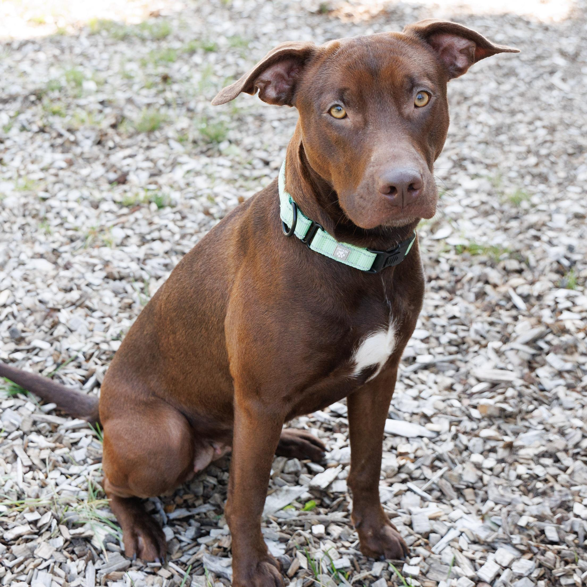
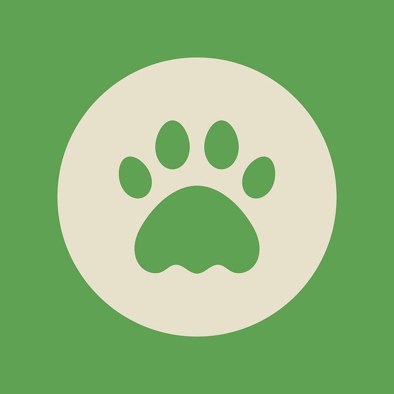
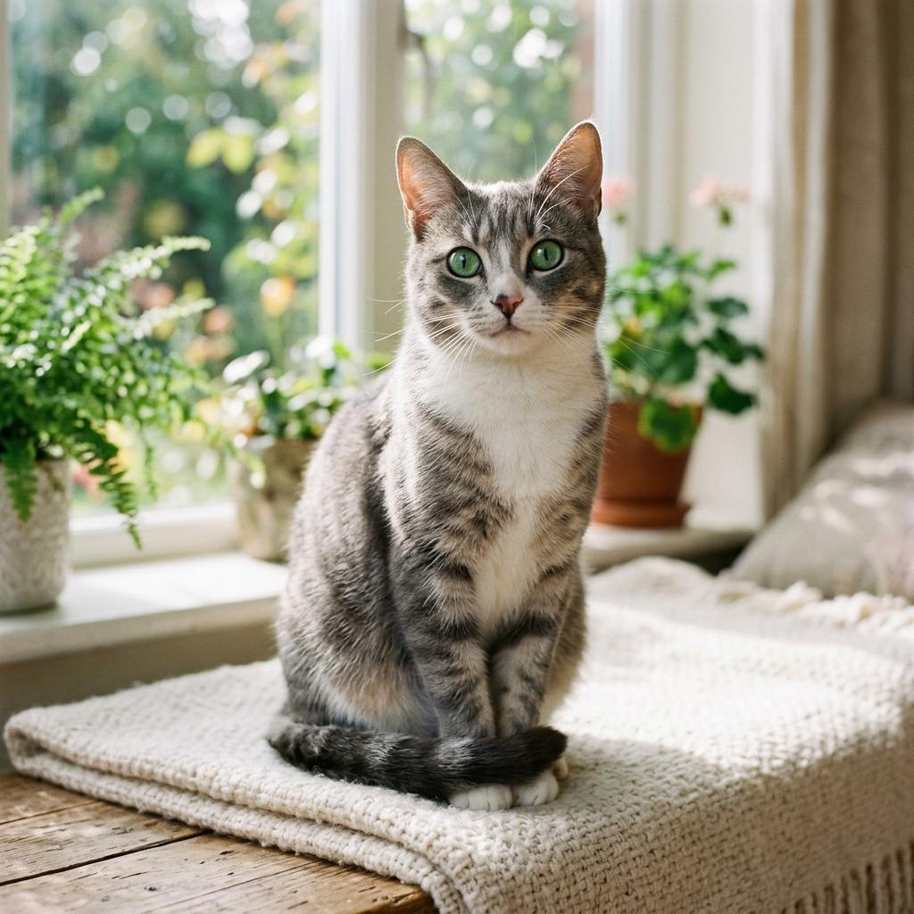
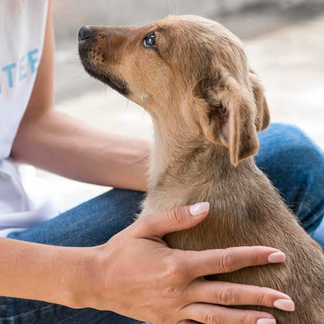
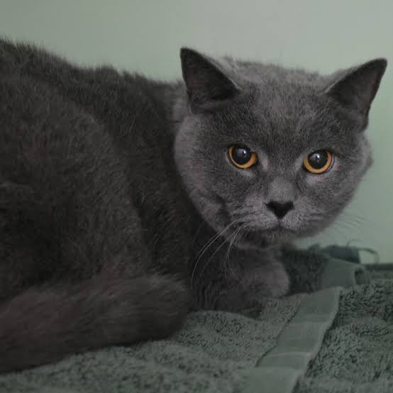

Max
Edad: 2 años
Jugueton, cariñoso y activo. Necesita una familia que disfrute jugar y salir a caminar con el.
Encuentra un nuevo mejor amigo

Conoce a nuestros amigos y descubre la adopcion responsable. Cada animal merece una familia que le brinde amor, cuidado y proteccion.

Edad: 2 años
Jugueton, cariñoso y activo. Necesita una familia que disfrute jugar y salir a caminar con el.

Edad: 1 año
Tranquila, curiosa y cariñosa. Necesita un hogar seguro donde reciba atencion y cuidados.

Edad: 3 años
Amigable y jugueton. Le gusta convivir con las personas y necesita paseos y cariño.

Edad: 6 meses
Curioso y lleno de energia. Necesita un ambiente seguro para crecer sano y feliz.
Adoptar significa asumir el compromiso de cuidar a un animal durante toda su vida. Antes de hacerlo, debemos contar con tiempo, espacio y recursos para atender sus necesidades.
Tambien puedes ayudar con donaciones